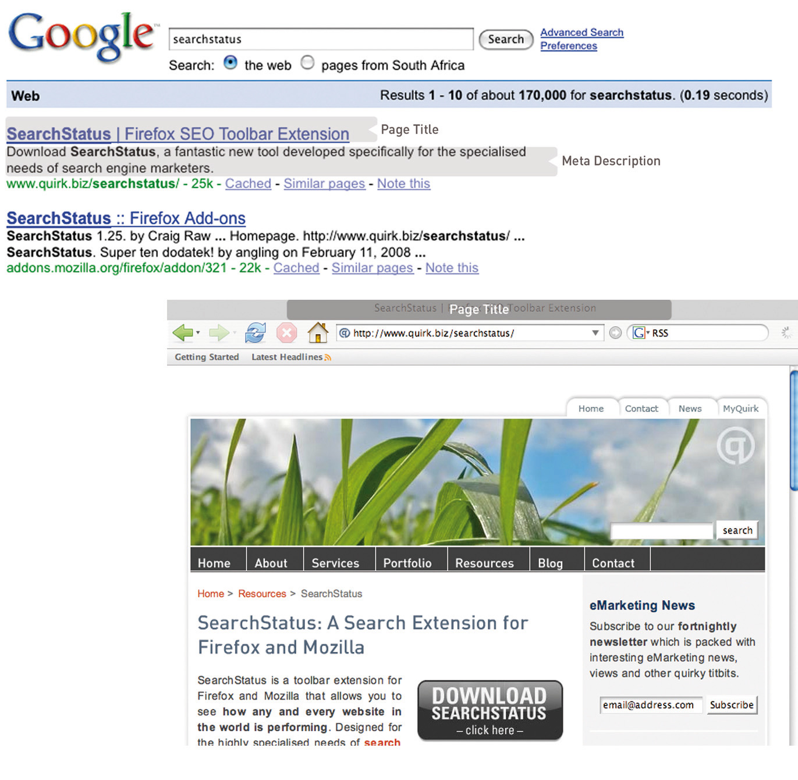
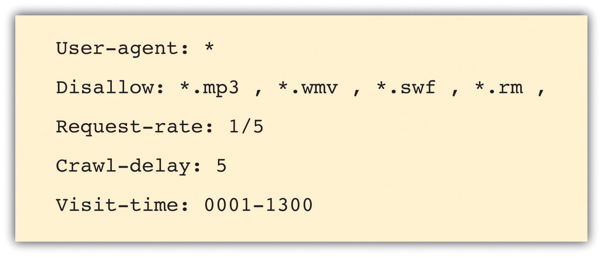
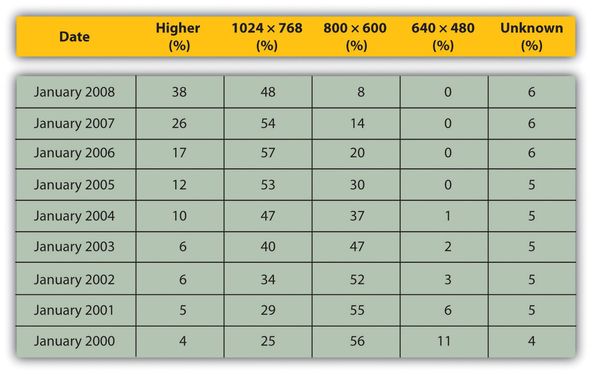
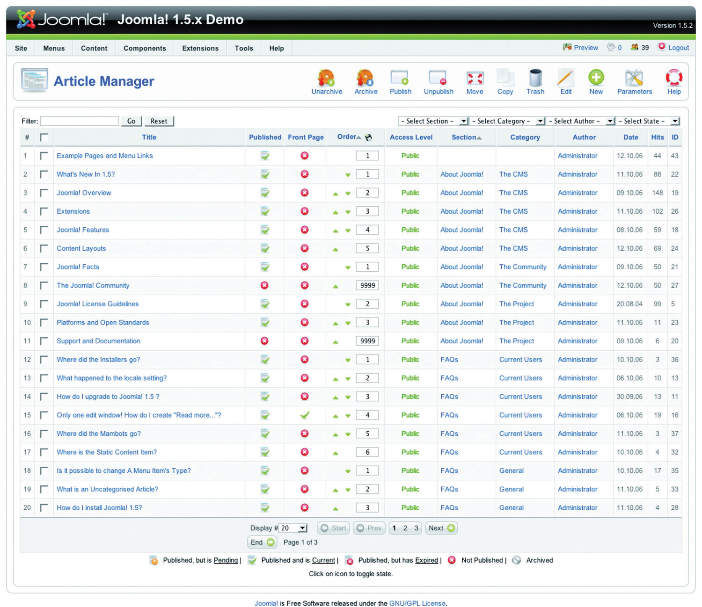
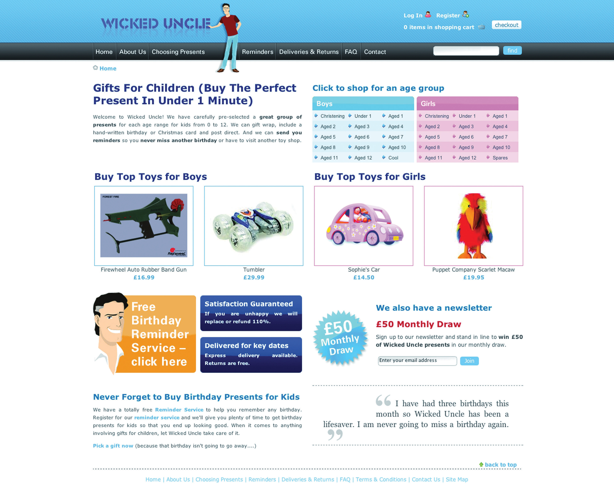
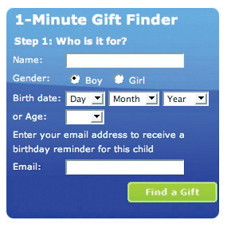
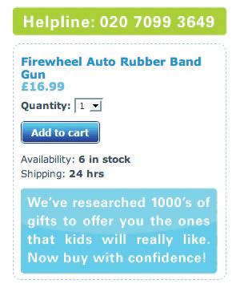

Web development and design are at the heart of successful eMarketing, yet many marketers do not understand the importance of laying solid foundations here. Like building a house, solid foundations are key to stability, longevity, and even scalability. Developing a Web site involves more than choosing colors and header images.
While it is tempting to focus on the design aesthetics of Web sites, and eye-catching Web sites can be converting Web sites, it is important to remember that a Web site is a marketing tool that should be increasing revenue for the company. Web sites should be built to serve the needs of the user. A Web site is not something that users stare at—navigation usually requires action and interaction from the Web visitor. If the user’s needs are served, the Web site will be more likely to enable the company to achieve its goals.
Figure 13.1 Important Factors to Consider When Optimizing for Search

While designers tend to talk about vision and can find conventions constraining, users of Web sites like conventions. They like Web sites that just work, without any thinking on their behalf.
Usability is the number one element that needs to be considered when developing a site. Search engine visibility is the second most important factor. No one can negate the importance that search engines play in online marketing—and if their spiders cannot find a site, it is almost certain that potential customers won’t either. (Bear in mind that there are some Web sites that are designed to be found in other ways—the importance of search traffic needs to be determined before the Web site is built.) Aesthetic design is now the least important factor—but that certainly doesn’t mean that sites need to be so ugly that they turn visitors into stone. It just means that design needs to be hinged on usability and search engine visibility rather than vice versa. Web sites can still be gorgeous; they just need to fulfill other goals as well—the key here is usability and conversion-oriented design.
“Design” can refer to the structural design of a Web site—which is fundamental—or to the aesthetic presentation of a Web site. We’ll use design to refer to aesthetic presentation.
While it is critical that a site is built for optimal crawling, indexing, and ranking by search engines (its search engine visibility), the site also needs to be worthy of traffic. It needs to be built for users. It should be usable and accessible with great content and conversion-oriented design. Fortunately, optimizing a site for usability and accessibility usually enhances search engine friendliness.
When Steve Krug wrote his excellent Web usabilityThe measure of a Web site’s ability to accomplish the goals of the user. book, he aptly called it Don’t Make Me Think!Steve Krug, Don’t Make Me Think! A Common Sense Approach to Web Usability, 2nd ed. (Berkeley, CA: New Riders, 2005). Designing a site for best usability means that users don’t have to figure out what to do; they are just able to do it.
Use standard conventionsElements such as links, menus, colors, and layout that are distinct and can be recognized easily by users., such as links that are distinct (blue and underlined is standard), menus top or left, and the logo in the top left-hand corner. Search boxes are usually on the top of the page and should use standard wording such as “search” on buttons. Following standards for important elements that are familiar to Web users means that they know immediately where to look for or how to use them. Important elements (such as menus, logos, colors, and layout) should be distinct, easy to find, and consistent throughout the Web site.
Common page elementsItems that appear on every page of a Web site. are those elements that are on every page of the Web site. These can include main navigation, a search box, a link to the home page, and sign-up forms.
The information architectureThe layout and structure of a Web site, which should be according to information hierarchy and categories. of a site is crucial to usability. Topics and categorization should flow from broad to narrow and should be built around users’ needs and not company structure. An intuitively designed structure will guide users to their goals.
The site mapOn a Web site, a page that links to every other page in the Web site and displays these links organized according to the information hierarchy. should be available from every page and should clearly show the information architecture of the Web site. Dynamic site maps can be employed so that the site map is updated automatically as information is added to the Web site.
As well as carefully thought-out information architecture, the navigationHow a Web user moves through a Web site and the elements that assist the user. should guide users easily through both top-level and deeper pages. Navigation should also let users know where they are in the site (especially since not all users arrive via the home page). Breadcrumb linksLinks, usually on the top of the page, that indicate where a page is in the hierarchy of the Web site., clear page titles, URLs (uniform resource locators)The Web address that is unique to every page on the Internet., and menu changes all help show the user where she is.
Figure 13.2

VisitBritain.com uses breadcrumb links and menu changes so that the users know where they are in the Web site.
AccessibilityThe degree to which a Web site is available to users with disabilities or technical limitations. makes Web sites easy to use and easy to scale. In some countries, accessibility is a legal requirement of government Web sites. Some key points of accessibility include the following:
Just like in Hansel and Gretel, breadcrumb links help show users the path they have taken in the Web site. Unlike the fairy story, these breadcrumbs shouldn’t disappear as you navigate through the Web site.
Scaling and scalability—why is it important that Web sites can scale?
Content needs to be written so that users can grab the information they need in as little time as possible. Text can be made more easily readable by doing the following:
On the page, use an inverted pyramid style, or newspaper style, for your copy. The bulk of the information should be at the top of the page to make for easy scanning.
There are some key “don’ts” when it comes to building a user-friendly Web site:
Usability and accessibility guidelines are useful for checking that all elements have been dealt with. Massachusetts Institute of Technology (MIT) Information Services and Technology provides a usability checklist online at http://ist.mit.edu/services/consulting/usability/guidelines.
The following is a copy of some of the items on the MIT checklist. Use it to see how your favorite Web site measures up.
Figure 13.3 Some of the Usability Guidelines from the MIT Checklist

Search engine traffic is vital to a Web site; without it, chances are the site will never fulfill its marketing functions. It is essential that the search engines can see the entire publicly visible Web site, index it fully, and consider it relevant for its chosen keywords.
Here are the key considerations for search engine optimization when it comes to Web development and design.
URLs (uniform resource locators), alt tagsTextual information that is displayed if an image cannot be displayed; used by search engines to determine what an image is., title tags, and metadataInformation that can be entered about a Web page and the elements on it that provides context and relevancy information to search engines; these used to be an important ranking factor. all describe a Web site and its pages to both search engine spiders and people. (And don’t worry: these words are all described for you in what follows.) Chances are, clear descriptive use of these elements will appeal to both.
URLs should be as brief and descriptive as possible. This may mean that URLs require server-sideOperations that take place on the server. rewriting so as to cope with dynamic parametersThe elements of a URL that are dynamically generated. You can identify them by question marks and ampersands in a URL. in URLs. Does that sound a little heavy? The examples below should make this clearer.
The following is a comparison of the URLs for Diamante Dog Collars, an imaginary product for sale on two imaginary Web sites:
The first example has dynamic parameters—these are shown by the question mark and the ampersand—and uses categories that make sense to the database (e.g., pid=1201), but they make little sense to the user. Dynamic parameters are so called as they change depending on the information being requested. Next time you use a search engine to search for information, take a look at the URL and see if you can spot the dynamic parameters.
The second example is far more user friendly and clearly indicates where in the site the user is. You even start getting a good idea of the architecture of the Web site from just one URL.
More than two dynamic parameters in a URL increase the risk that the URL may not be spidered. The search engine would not even index the content on that page.
Lastly, well-written URLs can make great anchor text. If another site is linking to yours and they use just the URL, the search engine will do a better job of knowing what the page is about if you have a descriptive URL.
Have you ever waited for a page to load and seen little boxes of writing where the images should be? Sometimes they say things like “topimg.jpg” and sometimes they are much clearer and you have “Cocktails at sunset at Camps Bay.”
Since search engines read text, not images, descriptive tags are the only way to tell them what the images are, but these are still essentially for users. Text readers for browsers will also read out these tags to tell the user what is there. Meaningful descriptions certainly sound a lot better than “image1,” “image2,” and “image3.”
Just as you can have the alt tag on an image hypertext markup language (HTML)The code that is used to write most Web sites. element, you can have a title attribute on almost any HTML element—most commonly on a link. This is the text that is seen when a user hovers over the element with the mouse pointer. It is used to describe the element or what the link is about. As this is text, it will also be read by search engine spiders.
Title tags, or what appears on the top bar of your browser, are used by search engines to determine the content of that page. They are also often used by search engines as the link text on the search engines results’ page, so targeted title tags help drive click-through rates. Title tags should be clear and concise (it’s a general rule of thumb that all tags be clear and concise, you’ll find). Title tags are also used when bookmarking a Web page.
Figure 13.4
The title tag appears in the browser and on the search engine results page (SERP), and the meta description can appear on the SERP as well.
Meta tags are where the developer can fill in information about a Web page. These tags are not normally seen by users. If you right click on a page in a browser and select “view source,” you should see a list of entries for “<meta name=.”
These are the metadata. In the past, the meta tags were used extensively by search engine spiders, but since so many people used this to try to manipulate search results, they are now less important. Metadata now act to provide context and relevancy rather than higher rankings. However, the meta tag called “description” often appears on the search engine results page (SERP) as the snippet of text to describe the Web page being linked to. This is illustrated in Figure 13.4. If the description is accurate, well written, and relevant to the searcher’s query, these descriptions are more likely to be used by the search engine. And if it meets all those criteria, it also means the link is more likely to be clicked on by the searcher.
When it comes to Web development, the copy that is shown on the Web page needs to be kept separate from the code that tells the browser how to display the Web page. This means that the search engine spider can discern easily between what is content to be read (and hence scanned by the spider) and what are instructions to the browser. A cascading style sheet (CSS)An approach to Web design that aims for lightweight code and standards-compliant Web sites. can take care of that and is covered further in this chapter.
The following text styles cannot be indexed by search engines:
If the search engine cannot see the text on the page, it means that it cannot spider and index that page.
If an XML (extensible markup language) file is used for the content in a Macromedia Flash file, then the content can be easily read by search engine spiders.
Well-organized information is as vital for search engines as it is for users. An effective link structure will provide benefits to search rankings and helps to ensure that a search engine indexes every page of your site.
Make use of a site map, linked to and from every other page in the site. The search engine spiders follow the links on a page, and this way, they will be able to index the whole site. A well-planned site map will also ensure that every page on the site is within a few clicks of the home page.
There are two site maps that can be used: an HTML site map that a visitor to the Web site can see, use, and make sense of and an XML (extensible markup language)A standard used for creating structured documents. site map that contains additional information for the search engine spiders. An XML site map can be submitted to search engines to promote full and regular indexing. Again, a dynamically generated site map will update automatically when content is added.
Using a category structure that flows from broad to narrow also indicates to search engines that your site is highly relevant and covers a topic in depth.
Have you noticed that sometimes several URLs can all give you the same Web page? For example, refer to the following:
All the above can be used for the same home page of a Web site. However, search engines see these as three separate pages with duplicate content. Search engines look for unique documents and content, and when duplicates are encountered, a search engine will select one as canonical, and display that page in the SERPs (search engine results pages). However, it will also dish out a lower rank to that page and all its copies. Any value is diluted by having multiple versions.
Lazy Webmasters sometimes forget to put any kind of redirect in place, meaning that http:// websitename.com doesn’t exist, while http://www.websitename.com does. This is termed “Lame-Ass Syndrome” (LAS) by Quirk, a fitting moniker.
Having multiple pages with the same content, however that came about, hurts the Web site’s search engine rankings. There is a solution: 301 redirects can be used to point all versions to a single, canonical version.
A robots.txt file restricts a search engine spider from crawling and indexing certain pages of a Web site by giving instructions to the search engine spider, or bot. This is called the Robots Exclusion ProtocolA protocol used to indicate to search engine robots which pages should not be indexed.. So, if there are pages or directories on a Web site that should not appear in the SERPs, the robots.txt file should be used to indicate this to search engines.
If a search engine robot wants to crawl a Web site URL—for example, http://www.websitename.com/welcome.html—it will first check for http://www.web sitename.com/robots.txt.
Visiting the second URL will show a text file with the following:
Here, “User-agent: *” means that the instruction is for all bots. If the instruction is to specific bots, it should be identified here. The “Disallow: /” is an instruction that no pages of the Web site should be indexed. If there are only certain pages or directories that should not be indexed, they should be included here.
For example, if there is both an HTML and a PDF (portable document format) version of the same content, the wise Webmaster will instruct search engine bots to index only one of the two to avoid being penalized for duplicate content.
The robots.txt file is publicly accessible, so although it does not show restricted content, it can give an idea of the content that a Web site owner wants to keep private. A robots.txt file needs to be created for each subdomain.
Here is a robots.txt file with additional information.
Figure 13.5
Instructions to search engine robots can also be given in the meta tags. This means that instructions can still be given if you only have access to the meta tags and not to the robots.txt file.
Make sure that both visitors to your Web site and search engines can see it all by following these guidelines:
With the foundations of usability and search engine visibility in mind, it is time to turn to making it all presentable with the design of the Web site.
Looks may not matter to search engines, but they go a long way toward assuring visitors of your credibility and turning them into customers.
Every Web site needs to be designed with clear goals (or conversions) in mind. Conversions take many forms and may include the following:
Before designing a Web site, research your audience and competitors to determine expectations and common elements to your industry. Mock up every layer of interaction. This means that before any coding begins, there is clear map of how the Web site should work. It’s all about foundations.
Here are some of the cues that visitors use to determine the credibility of a Web site:
Design also affects the accessibility of a Web site. You need to take into account screen resolutions, as designing for the biggest screen available could leave many of your users scrolling across and down to see the Web page. Subtle shading, background colors to text, and fancy fonts can also mean that many users cannot even see your Web site properly.
Figure 13.6
Figures show that screen resolution just keeps getting higher.
Source: Based on information from http://www.w3schools.com.
Screens just keep getting bigger, so does that mean that Web sites should as well? What about users who never hit the “maximize” button on their browser? How effective do you think sales data for laptops are in determining optimal screen resolution?
A cascading style sheet (CSS) is defined by W3C (World Wide Web Consortium) as “a simple mechanism for adding style (e.g., fonts, colors, spacing) to Web documents.”“Cascading Style Sheets Home Page,” World Wide Web Consortium, June 3, 2010, http://www.w3c.org/Style/css (accessed June 23, 2010).
In the early days of the Web, designers tended to use tables to lay out content for a Web page, and many Web sites still do so today. However, different browsers, and even different versions of browsers, all support code differently, resulting in Web sites that only work on certain browsers or bulky code needed to cope with all the different versions.
The W3C (http://www.w3.org) was created in 1994 and since then has been responsible for specifications and guidelines to promote the evolution of the Web, while ensuring that Web technologies work well together. The Web Standards Project (http://www.webstandards.org) launched in 1998 and labeled key guidelines as “Web standards.” Modern browsers should be built to support these standards, which should vastly reduce cross-browser compatibility problems, such as Web sites displaying differently in different browsers.
Web standards include the following:
CSS is standard layout language. It controls colors, typography, and the size and placement of elements on a Web page. Previously, Web developers have had to create instructions for every page in a Web site. With CSS, a single file can control the appearance of an entire site.
CSS allows designers and developers to separate presentation from content. This has several key benefits:
CSS can also do the following:
To see CSS in action, visit http://www.csszengarden.com, where you can make a single HTML page look very different, depending on which one of the many designer-contributed style sheets you apply to it.
As the name implies, a content management system (CMS) is used to manage the content of a Web site. If a site is updated frequently and if people other than Web developers need to update the content of a Web site, a CMS is used. Today, many sites are built on a CMS. The CMS can also allow content of a Web site to be updated from any location in the world.
A CMS can be built specifically for a Web site, and many Web development companies build their own CMS that can be used by their clients. A CMS can also be bought prebuilt, and there are many open-sourceUnlike proprietary software, open-source software makes the source code available so that other developers can build applications for or even improve the software., prebuilt CMSs available, some of which are free.
A CMS should be selected with the goals and functions of the Web site in mind. A CMS needs to be able to scale along with the Web site and business that it supports, and not the other way around.
Of course, the CMS selected should result in a Web site that is search engine friendly.
Here are some key features to look out for when selecting or building a CMS:
URLs. Instead of using dynamic parameters, the CMS should allow for server-side rewriting of URLs (uniform resource locators). It should allow for the creation of URLs that have the following characteristics:
Figure 13.7
Joomla! is an open-source content management system (CMS). Here you can see how the CMS allows you to manage the articles on the Web site.
Be aware when building clean, descriptive, and dynamic URLs from CMS content. Should you use a news heading (“Storm” in this example) as part of your URL (http://www.websitename.com/cape/storm) and someone changes the heading to “Tornado” (http://www.websitename.com/cape/tornado), this will alter the URL and the search engines will index this as a new page, but with the same content as the URL that had the old heading. Bear this in mind before adding dynamic parameters to your URLs.
Finally, using a CMS that supports standards compliant HTML and CSS is very important—without it inconsistencies may be rendered across various browsers. It also ensures faster loading time and reduced bandwidth, makes markup easier to maintain, supports SEO efforts, and ensures that every single visitor to a Web site, no matter what browser they are using, will be able to see everything on the site.
As a whole, technology should act only as an enabler. It should never be a site’s main focus. Here are some technical considerations vital for a good Web site.
Whether you use proprietary or open-source software is an important consideration when building a new site, and all avenues should be explored. Open-source software is fully customizable and benefits from a large developer community. Propriety software usually includes support in its price.
It is vital that important URLs in your site are indexable by the search engines. Ensure that URL rewriting is enabled according to the guidelines in this chapter. URL rewriting should be able to handle extra dynamic parameters that might be added by search engines for tracking purposes.
Compression helps to speed up download times of a Web page, improving user experience.
Form validation is the process whereby the data entered into a form are verified in order to meet certain preset conditions (e.g., ensuring that the name and e-mail address fields are filled in).
Client-sideOperations that take place before information is sent to the server. validation relies on JavaScript, which is not necessarily available to all visitors. Client-side validation can alert a visitor to an incorrectly filled-in form most quickly, but server-side validation is the most accurate. It is also important to have a tool to collect all the failed tests and present appropriate error messages neatly above the form the user is trying to complete. This will ensure that correctly entered data are not lost but repopulated in the form to save time and reduce frustration.
The Internet has afforded the opportunity to conduct business globally, but this means that Web sites need to make provision for non-English visitors. It is advisable to support international characters via UTF-8 (8-bit unicode transformation format) encoding; both on the Web site itself and in the form data submitted to it.
Sessions can be used to recognize individual visitors on a Web site, which is useful for click-path analysis. Cookies can be used to maintain sessions, but URL rewriting can be used to compensate for users who do not have cookies activated. This means that as visitors move through a Web site, their session information is stored in a dynamically generated Web address.
Why does URL rewriting create a moving target for a search engine spider?
Search engine spiders do not support cookies, so many Web sites will attempt URL rewriting to maintain the session as the spider crawls the Web site. However, these URLs are not liked by search engine spiders (as they appear to create a moving target for the robot) and can hinder crawling and indexing. The work-around: use technology to detect if a visitor to the site is a person or a robot, and do not rewrite URLs for the search engine robots.
Site maps are exceptionally important, both to visitors and to search engines. Technology can be implemented that automatically generates and updates both the human-readable and XML site maps, ensuring spiders can find new content.
Really simple syndication (RSS) is an absolute necessity. With all the millions of Web and blog sites in existence, Web users can no longer afford to spend time browsing their favorite sites to see if new content has been added. By enabling RSS feeds on certain sections on the site, especially those that are frequently updated, users will have the content delivered directly to them. Visitors should be able to pick and choose the sections they like to get updates from via a feed.
A cascading style sheet (CSS) is what gives a site its look and feel. With CSS, the following are true:
A landing pageThe page users are directed to from any campaign designed to drive traffic to a specific URL (uniform resource locator). is the page users are directed to from any campaign designed to drive traffic to a specific URL (uniform resource locator). The traffic to a landing page could be from a banner or PPC (pay-per-click) advertisement, an e-mail, a print advertisement, a television or radio spot, or direct marketing. Users are being sent there for a very specific reason, including the following:
As far as landing pages go, first impressions really do count. They need to capture the user immediately and make him want to complete the desired action. Users who land on these pages make the decision to complete the desired action based on two criteria:
Effective design and benefit statements can help users to make the decision to complete the desired action.
Focus the page on a single call to action. These are purpose-built, purpose-driven pages, and extraneous information should be avoided.
The landing page does not need to carry the same navigation of the Web site and can look slightly different (though a large deviation in style is not advised). The aim is to keep users on a path to the goal.
Landing pages can detract from SEO (search engine optimization) efforts, as there might be many similar landing pages created. Use the robots.txt file to keep search engine spiders out.
There are no cons to designing a Web site for your users first and foremost. It can require some creative thinking when it comes to ensuring that wacky ideas are accessible and usable, but the benefits of taking the time to ensure that Web sites are coded according to best practice will show in the longevity of the Web site.
Beautiful Web sites do not need to be sacrificed for standards compliance.
Wicked Uncle (http://www.wickeduncle.com) had just launched its new Web site (and business), when they realized that its Web site was not easy to use. The premise of its service is easy and quick buying of children’s presents, and the layout of its Web site was a hindrance. Even though it had just launched, a Web site redevelopment was in order.
Figure 13.8 Home Page of the Wicked Uncle Web Site
Source: Used by permission from Wicked Uncle.
The aim of the redevelopment was to make a gift buyable in under a minute. The new Web site would also allow Wicked Uncle to build up a database of users so that it could start one-to-one marketing to a database of subscribers. The look and feel of the first Web site was maintained, but the Web site was restructured to be more usable and to make the content more available to search engines.
Figure 13.9
Find a gift in under one minute.
Source: Used by permission from Wicked Uncle.
The site was previously built to be 800 × 600 pixels, which is a resolution used by only 7 percent of the target market. The new Web site was built in 1024 × 768 pixels, which not only allowed more room but also is much better suited to the target market. More than 92 percent of the target UK market has high-resolution monitors.
Figure 13.10
The help line is prominently displayed on each page.
Source: Used by permission from Wicked Uncle.
On the product pages, all product images were increased in size, and more images were included so that Web users could see the product from a variety of angles. Gifts for boys and gifts for girls were color coded to ensure easy navigation. The help line was prominently displayed on each page, as was an easy add-to-cart button. Pertinent information showing whether the item was in stock and how long it would take to ship was also easily available.
A birthday-reminder tool was implemented on the Web site. When users register with Wicked Uncle and register a child’s age, they get yearly birthday reminders of the child’s birthday. This has been very successful and has built up a database of e-mail addresses—from zero to fifteen thousand in less than a year!
The shopping process is exceptionally smooth, with functionality being carefully thought out. Within the process, the user is able to register different children with their own delivery address. The colors used in the shopping cart complement the Web site but are unique to the cart, so the cart stands out. There is always a clear indication of what the next step in the check-out process is.
Lastly, for those shoppers in a hurry, the Web site features a 1-Minute Gift Finder. With a new Web site that is easy to use, Wicked Uncle was able to run campaigns to drive targeted traffic to the Web site.
Rand Fishkin, The Beginner’s Guide to SEO, SEOmoz, February 25, 2006, http://www.seomoz.org/article/beginners-guide-to-search-engine-optimization (accessed April 3, 2008).
Peter Seebach, “The Cranky User: How Not to Make Your Site Accessible,” IBM, March 13, 2001, http://www-128.ibm.com/developerworks/library/us-cranky1.html (accessed March 3, 2008).
“Usability Guidelines,” MIT Information Services and Technology, http://ist.mit.edu/services/consulting/usability/guidelines (accessed March 3, 2008).
Jeffrey Zeldman, Designing with Web Standards, 2nd ed. (Berkeley, CA: New Riders, 2006).